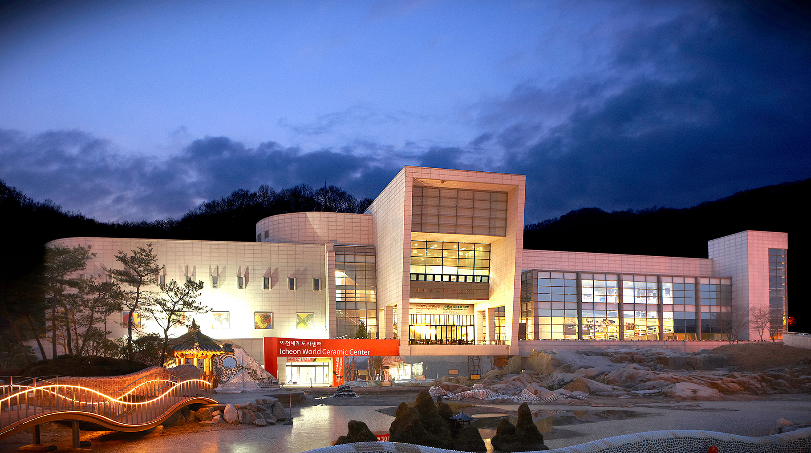

Introdution

경기세계도자비엔날레는 한국의 도자산업과 문화예술을 대표하는 경기도 지역에서 열리는 예술현장으로, 세계도자예술의 현황과 도자문화의 이슈들을 검토하고 미래 방향을 가늠해 보는 자리입니다. 다양한 실험을 통하여 동시대 세계도자예술의 현재를 진단하고 도자예술의 미래지향점을 모색하여 담론을 생산해 온 경기세계도자비엔날레는 2019년에 제10회를 맞이하게 됩니다.
2001년부터 시작된 경기시계도자비엔날레는 지역성을 탈피한 한국의 대표행사로 자리매김하고 있습니다. 전 세계 도예가가 한국으로, 세계 유명도지가 경기도로, 매 홀수 년마다 전 세계 70여개 국가의 도자예술가들이 모이는 진정한 도자 예술 축제 경기세계도자비엔날레는 15년이 넘는 시간을 지속해오며 한국 도자의 가치를 조명하고, 세계 도자의 중심 축을 대한민국으로 모으는 수심점 역할을 해오고 있습니다.
그간 비엔날레는 도자의 경계를 허물고 새로운 영역을 확장하는 다양한 시도를 통해 각계의 관심과 긍정적 평가를 이끌어내는 한편, 현대 미술의 한 갈래로 인식시키는데 성공했습니다.
경기세계도자비엔날레 주요연혁
- 행사기간2001.8.10.~10.28.(80일간 / 69개국 참가)
- 주제도자의 과거·현재·미래: 흙으로 빚는 미래
(Shaping the Future with Earth) - 주요 전시 / 학술 행사국제공모전, 세계현대도자전, 세계도자문명전(동,서양), 동북아도자교류전, 한국현대도자전, IAC회원전, NCECA회원전, 중국고대토기전 외 7개 전시 및 학술/워크숍 등
- 행사기간2003.9.1.~10.30.(60일간 / 68개국 참가)
- 주제창조의 열정·전통의 격조·생활의 향기
(Passion, Elegance, Fragrance) - 주요 전시 / 학술 행사국제공모전, 세계현대도자전, 세라믹하우스, 조선도자500년전, 세계10대기업명품전, 스페인도자전, 중국불산도자인형전, 피카소도자전 외 3개 전시 및 학술/워크숍 등
- 행사기간2005.4.23.~6.19.(58일간 / 67개국 참가)
- 주제문화를 담는 도자
(Ceramics: The Vehicle of Culture) - 주요 전시 / 학술 행사국제공모전, 세계현대도자전, 세계청자전 \청자의 색과형 \, 세라믹하우스 II, 세계도자기념품전, 세계주전자전 외 5개 전시 및 학술/워크숍 등
- 행사기간2007.4.28.~5.27.(30일간 / 66개국 참가)
- 주제미래의 아시아를 빚자!
(Reshaping Asia) - 주요 전시 / 학술 행사국제공모전, 동서도자유물의보고전, 아시아테마세계현대도자전, 아시아테마세라믹하우스 외 2개 전시 및 학술/워크숍 등
- 행사기간2009.4.25.~5.24.(60일간 / 70개국 참가)
- 주제불의 모험
(Adventures of the Fire) - 주요 전시 / 학술 행사국제공모전, 세계현대도자전, 세라믹스페이스&라이프 외 4개 전시 및 학술/워크숍, 에듀비엔날레. 이벤트 등
- 행사기간2011.9.24.~11.22.(60일간 / 71개국 참가)
- 주제불의 여행
(Journey From Fire) - 주요 전시 / 학술 행사국제공모전, 상감도자특별전, 선데이모닝세라믹스, 세라믹스라이프전, 한중도자예술교류전, 일본토야마유리공예전, 프랑스국가초청전 외 5개 전시 및 학술/워크숍, 부대행사 등
- 행사기간2013.9.28.~11.17.(51일간 / 57개국 참가)
- 주제커뮤니티: 나, 너, 우리 다함께
(Community: With me, With you, With us) - 주요 전시 / 학술 행사국제지명공모전, 한중도자예술교류전, 핫루키전 노르웨이국가초청전, 전국장애인도예공모전 외 3개 전시 및 학술/워크숍, 부대행사 등
- 행사기간2015.4.24.~5.31.(38일간 / 74개국 참가)
- 주제색; 세라믹스펙트럼(Color: Ceramic Spectrum) - 이색, 채색, 본색
- 주요 전시 / 학술 행사국제공모전, 이천특별전\수렴과확산\, 광주특별전\본색공감\, 여주특별전\오색일화\, 국제장애인도예공모전, 이탈리아국가교류전 외 3개 전시 및 학술/워크숍, 키즈비엔날레, 부대행사 등
- 행사기간2017.4.22.~5.28.(37일간 / 76개국 참가)
- 주제서사: 삶을 노래하다
(Narrative: Ode to Life) - 기억, 기록, 기념 - 주요 전시 / 학술 행사국제공모전, 이천주제전\기억: 삶을 돌아보다\, 광주주제전\기록: 삶을 말하다\, 여주주제전\기념: 삶을 기리다\, 국제장애인도예공모전, 특별초청전\니일 브라운스워드: 팩토리\외 1개전시 및 학술/워크숍, 부대행사 등